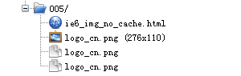
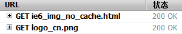

HO9005: 只有 IE6 中给 IMG 设置相同的 src 时会重载图片
标准参考
无
问题描述
当给一个现有的 IMG 元素重设其 "src" 为其当前的 "src" 时，只有 IE6 会重现载入该图片，其他浏览器则不会。
造成的影响
如果基于 IE6 的这个特点设计了图片重载功能，在其他浏览器中不会得到预期的结果，图片不会被重新加载（例如验证码图片）。
受影响的浏览器
| IE6 |
|---|
问题分析
这个问题需要通过 HTTP 链接监听工具来验证，对于 IE 浏览器本文中使用 Charles工具监听链接情况，其他浏览器使用自身的开发工具来监听链接。
分析以下代码：
<a href="#" onclick="document.getElementById('codes').src='logo_cn.png'" title="点击此处加载相同图片">
<img id="codes" border="0" src="logo_cn.png" />点击加载相同图片</a>
点击“点击加载相同图片”使得 IMG[id="codes"] 更改 "src"（与点击前的 "src" 一致）。
多次点击图片后，在各个检测工具中得到的请求结果如下表：
| IE6 |
|---|
|  |
| IE7 IE8 |
 |
| Firefox |
|  |
| Safari Chrome |
 |
| Opera |
 |
上例测试情况证明，IE7 IE8 Firefox Safari Chrome Opera 等浏览器在多次点击图片后并没有向服务器端发送新的请求，说明此时他们均缓存了图片。
而 IE6 则没有该缓存机制，从 Charles 工具的截图中可以看出，每次 "src" 修改后均会再次从远程请求图片。
解决方案
如果需要重复设置相同的 src 值时，均触发 IMG 的 onload 事件，或者需要每次均从服务器端下载图片数据的时候，可以采用图片地址后加上随机数或当前时间戳参数的手段，避免内容被缓存。
参见
知识库
相关问题
测试环境
| 操作系统版本: | Windows 7 Ultimate build 7600 |
|---|---|
| 浏览器版本: |
IE6 IE7 IE8 Firefox 3.6 Chrome 4.0.302.3 dev Safari 4.0.4 Opera 10.51 |
| 测试页面: | ie6_img_no_cache.html |
| 本文更新时间: | 2010-09-06 |
关键字
IMG src 刷新 重新加载